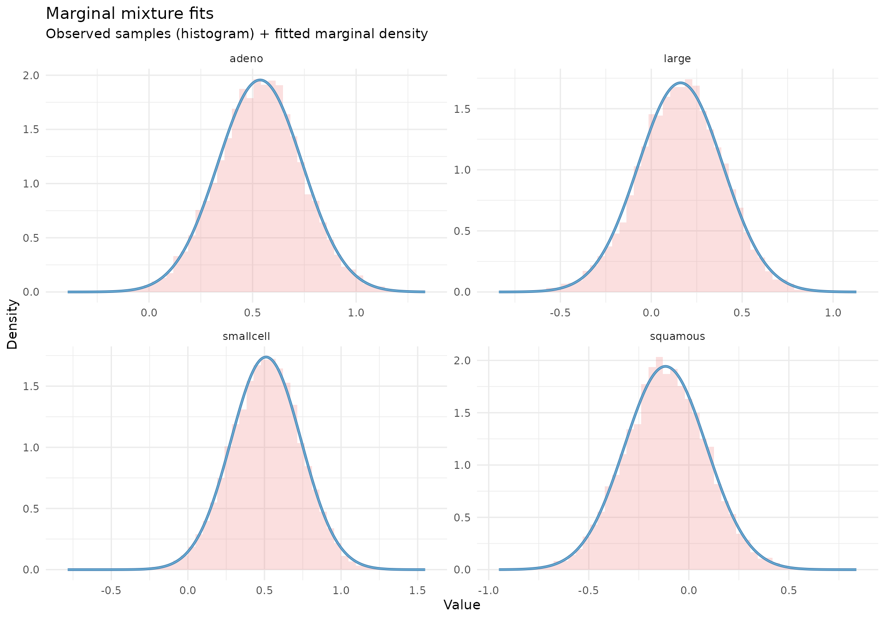
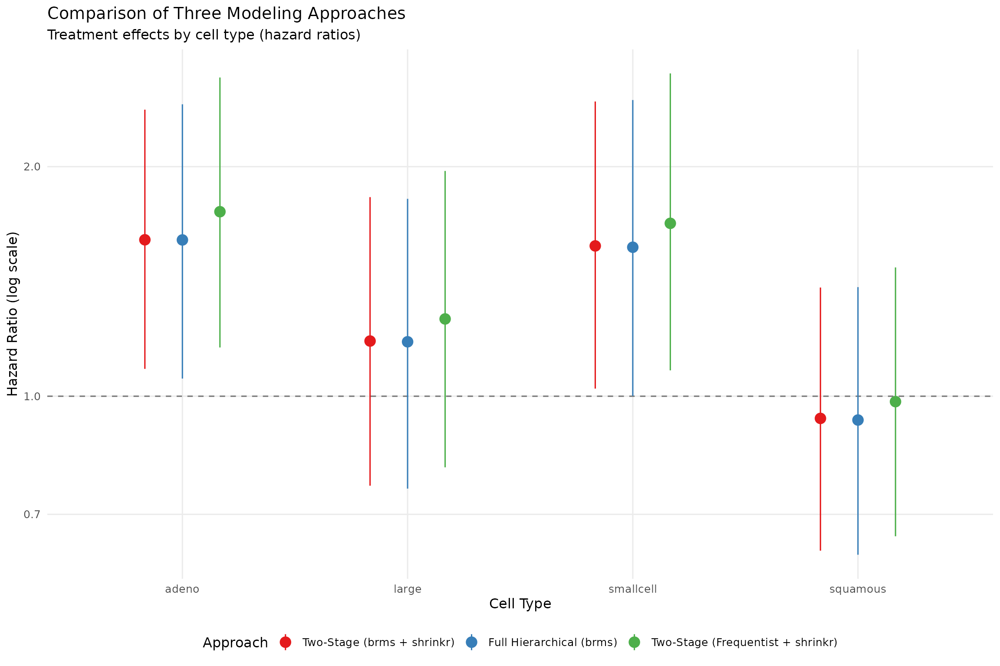
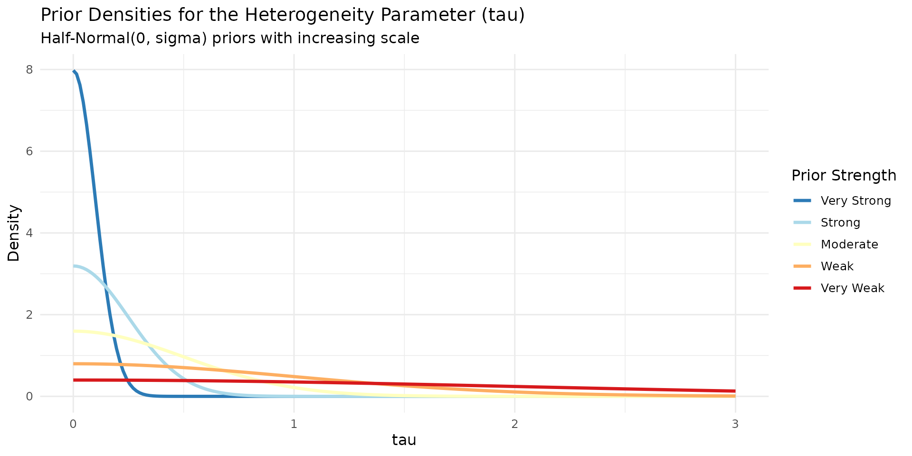
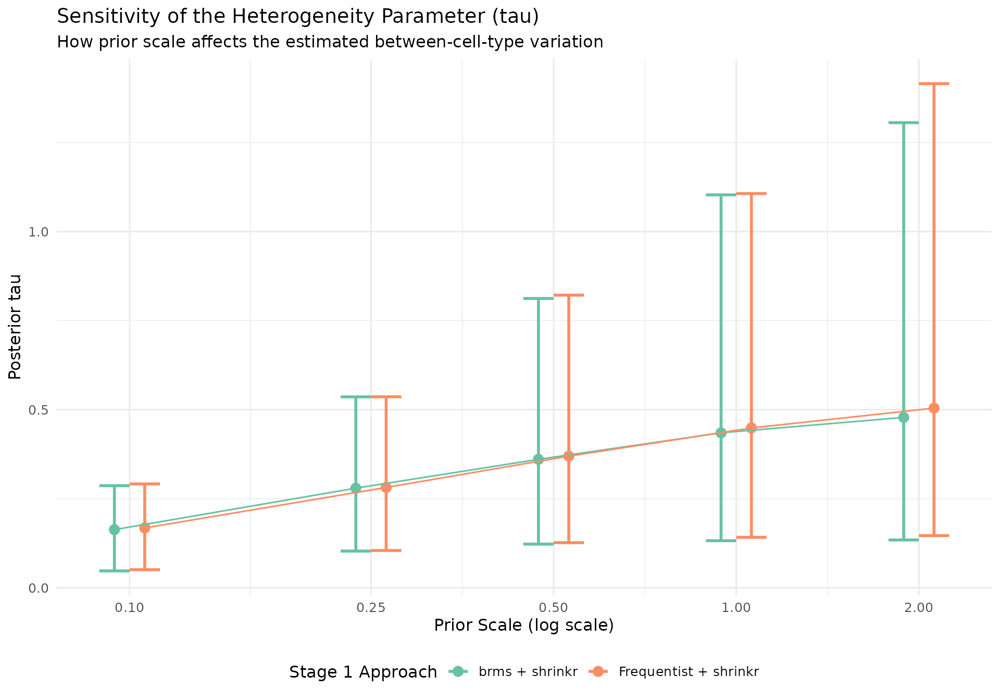
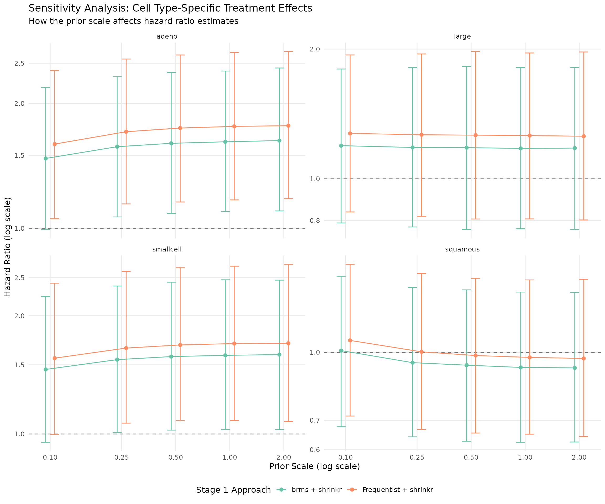

Survival Analysis with brms and shrinkr
Jacob M. Maronge
2026-06-15
Source:vignettes/brms_integration.Rmd
brms_integration.RmdOverview
This vignette demonstrates hierarchical shrinkage for survival
analysis using the classic veteran lung cancer dataset. We
explore a key clinical question: Does the treatment effect vary
by lung cancer cell type?
Rather than treating cell type-specific treatment effects as fixed interaction terms, we model them as random effects drawn from a common distribution. This hierarchical structure allows us to:
- Borrow strength across cell types, especially for small subgroups
- Estimate the overall mean treatment effect (
mu) - Quantify heterogeneity in treatment effects (
tau) - Shrink extreme subgroup estimates toward the group mean
We compare three modeling approaches:
-
Two-stage (brms + shrinkr): fit a Cox model in
brms, then apply hierarchical shrinkage inshrinkr - Full hierarchical (brms): fit the hierarchical Cox model in one step
-
Two-stage (frequentist + shrinkr): use Cox model
estimates from
survival::coxph(), then apply shrinkage
The two-stage brms workflow produces nearly identical
results to the full hierarchical model, while making it easy to explore
alternative hierarchical priors without repeatedly refitting the Stage 1
model.
Some model-fitting steps are computationally intensive and are not evaluated during routine package checks. All code needed to reproduce the analysis is shown below.
Setup
library(shrinkr)
library(brms)
library(tidybayes)
library(distributional)
library(tidyverse)
library(survival)
library(posterior)
library(patchwork)
theme_set(theme_minimal(base_size = 12))
cell_types <- c("squamous", "smallcell", "adeno", "large")
prior_specs <- list(
very_strong = list(name = "Very Strong", scale = 0.1),
strong = list(name = "Strong", scale = 0.25),
moderate = list(name = "Moderate", scale = 0.5),
weak = list(name = "Weak", scale = 1.0),
very_weak = list(name = "Very Weak", scale = 2.0)
)The Veteran Dataset
data(veteran, package = "survival")
head(veteran)
#> trt celltype time status karno diagtime age prior
#> 1 1 squamous 72 1 60 7 69 0
#> 2 1 squamous 411 1 70 5 64 10
#> 3 1 squamous 228 1 60 3 38 0
#> 4 1 squamous 126 1 60 9 63 10
#> 5 1 squamous 118 1 70 11 65 10
#> 6 1 squamous 10 1 20 5 49 0
table(veteran$celltype, veteran$trt)
#>
#> 1 2
#> squamous 15 20
#> smallcell 30 18
#> adeno 9 18
#> large 15 12
veteran %>%
group_by(celltype, trt) %>%
summarise(
n = n(),
deaths = sum(status),
median_time = median(time),
.groups = "drop"
)
#> # A tibble: 8 × 5
#> celltype trt n deaths median_time
#> <fct> <dbl> <int> <dbl> <dbl>
#> 1 squamous 1 15 13 100
#> 2 squamous 2 20 18 156.
#> 3 smallcell 1 30 28 53
#> 4 smallcell 2 18 17 27
#> 5 adeno 1 9 9 92
#> 6 adeno 2 18 17 49.5
#> 7 large 1 15 14 177
#> 8 large 2 12 12 82Variables:
-
time: survival time (days) -
status: death indicator (1 = died) -
trt: treatment (1 = standard,2 = test) -
celltype: cancer type (squamous,smallcell,adeno,large) -
karno: Karnofsky score (performance status) -
age: age in years
The dataset contains 137 patients across four cell types, with varying sample sizes.
Approach 1: Two-Stage (brms + shrinkr)
Stage 1: Fit Cox Model
We begin by fitting a Cox proportional hazards model that allows the treatment effect to vary by cell type. At this stage we estimate subgroup-specific treatment effects without adding hierarchical shrinkage across cell types. That hierarchical regularization is introduced in Stage 2.
brms_uninformative <- brm(
time | cens(1 - status) ~ trt:celltype + karno + age,
data = veteran,
family = cox(),
chains = 4,
iter = 4000,
warmup = 1000,
seed = 123
)
brms_uninformative_summary <- capture.output(print(summary(brms_uninformative)))What this model does:
- Estimates a separate log hazard ratio for the test treatment in each cell type
- Adjusts for baseline performance status (
karno) and age - Leaves pooling across cell types to the second-stage hierarchical model
Results:
cat(brms_uninformative_summary, sep = "\n")
#> Family: cox
#> Links: mu = log
#> Formula: time | cens(1 - status) ~ trt:celltype + karno + age
#> Data: veteran (Number of observations: 137)
#> Draws: 4 chains, each with iter = 4000; warmup = 1000; thin = 1;
#> total post-warmup draws = 12000
#>
#> Regression Coefficients:
#> Estimate Est.Error l-95% CI
#> Intercept 4.16 0.74 2.70
#> karno -0.03 0.01 -0.04
#> age -0.01 0.01 -0.02
#> trt:celltypesquamous -0.12 0.21 -0.52
#> trt:celltypesmallcell 0.51 0.23 0.05
#> trt:celltypeadeno 0.54 0.20 0.13
#> trt:celltypelarge 0.16 0.23 -0.31
#> u-95% CI Rhat Bulk_ESS Tail_ESS
#> Intercept 5.61 1.00 9000 8957
#> karno -0.02 1.00 11647 9539
#> age 0.01 1.00 9875 8676
#> trt:celltypesquamous 0.29 1.00 5515 7429
#> trt:celltypesmallcell 0.95 1.00 5310 7315
#> trt:celltypeadeno 0.94 1.00 5398 7230
#> trt:celltypelarge 0.61 1.00 5399 7077
#>
#> Draws were sampled using sampling(NUTS). For each parameter, Bulk_ESS
#> and Tail_ESS are effective sample size measures, and Rhat is the potential
#> scale reduction factor on split chains (at convergence, Rhat = 1).Stage 2: Apply Hierarchical Shrinkage
Now we extract the cell type-specific treatment effect posteriors and apply hierarchical shrinkage.
Step 1: Extract posterior samples
brms_posteriors <- brms_uninformative %>%
spread_draws(`b_trt:celltypesquamous`, `b_trt:celltypesmallcell`,
`b_trt:celltypeadeno`, `b_trt:celltypelarge`) %>%
select(-c(.chain, .iteration, .draw)) %>%
pivot_longer(everything(), names_to = "celltype", values_to = "value") %>%
mutate(celltype = gsub("b_trt:celltype", "", celltype)) %>%
group_by(celltype) %>%
summarise(draws = list(matrix(value, ncol = 1)), .groups = "drop") %>%
deframe()brms_posteriors is a named list containing posterior
draws for each cell type.
Step 2: Fit a Gaussian mixture approximation
The fit_mixture() function approximates each subgroup
posterior with a mixture of Gaussian components. This creates a flexible
representation of the Stage 1 posterior that can be passed to
shrink().
mix_brms <- fit_mixture(brms_posteriors, K_max = 3, verbose = TRUE)
Understanding the mixture approximation:
- Each posterior is approximated as a weighted sum of Gaussian components
- The number of components is chosen separately for each cell type
- This allows the approximation to capture skewness or heavier tails when needed
Step 3: Apply a hierarchical prior
priors_moderate <- list(
mu = dist_normal(0, 1),
tau = dist_truncated(dist_normal(0, 0.5), lower = 0)
)
fit_twostage_brms <- shrink(
mixture = mix_brms,
hierarchical_priors = priors_moderate,
chains = 4,
iter = 4000,
warmup = 1000,
seed = 456
)
moderate_brms_output <- capture.output(print(fit_twostage_brms))Results:
cat(moderate_brms_output, sep = "\n")
#> # A tibble: 3 × 7
#> variable mean sd q2.5 q50 q97.5 rhat
#> <chr> <dbl> <dbl> <dbl> <dbl> <dbl> <dbl>
#> 1 mu 0.246 0.265 -0.272 0.245 0.757 1.00
#> 2 tau 0.361 0.176 0.123 0.324 0.812 1.00
#> 3 tau_squared 0.161 0.177 0.0150 0.105 0.659 1.00Interpreting the shrinkage:
- Cell type-specific estimates are pulled toward the overall mean
(
mu) - The amount of shrinkage depends on
tau, the between-cell-type heterogeneity - Smaller
tauimplies stronger pooling - Larger
tauimplies weaker pooling
Approach 2: Full Hierarchical (brms)
For comparison, we fit the corresponding one-stage hierarchical Cox
model directly in brms.
brms_hierarchical <- brm(
time | cens(1 - status) ~ trt + (0 + trt | celltype) + karno + age,
data = veteran,
family = cox(),
prior = c(
prior(normal(0, 1), class = b, coef = "trt"),
prior(normal(0, 0.5), class = sd, group = "celltype", lb = 0)
),
chains = 4,
iter = 4000,
warmup = 1000,
seed = 123
)
brms_hierarchical_summary <- capture.output(print(summary(brms_hierarchical)))
brms_hier_effects <- brms_hierarchical %>%
spread_draws(r_celltype[celltype, term], b_trt) %>%
filter(term == "trt") %>%
mutate(theta = b_trt + r_celltype) %>%
group_by(celltype) %>%
summarise(
hr_mean = exp(mean(theta)),
hr_lower = exp(quantile(theta, 0.025)),
hr_upper = exp(quantile(theta, 0.975)),
.groups = "drop"
)Results:
cat(brms_hierarchical_summary, sep = "\n")
#> Family: cox
#> Links: mu = log
#> Formula: time | cens(1 - status) ~ trt + (0 + trt | celltype) + karno + age
#> Data: veteran (Number of observations: 137)
#> Draws: 4 chains, each with iter = 4000; warmup = 1000; thin = 1;
#> total post-warmup draws = 12000
#>
#> Multilevel Hyperparameters:
#> ~celltype (Number of levels: 4)
#> Estimate Est.Error l-95% CI u-95% CI Rhat
#> sd(trt) 0.36 0.18 0.13 0.80 1.00
#> Bulk_ESS Tail_ESS
#> sd(trt) 4188 6657
#>
#> Regression Coefficients:
#> Estimate Est.Error l-95% CI u-95% CI Rhat
#> Intercept 4.11 0.74 2.66 5.55 1.00
#> trt 0.26 0.26 -0.24 0.79 1.00
#> karno -0.03 0.01 -0.04 -0.02 1.00
#> age -0.01 0.01 -0.02 0.01 1.00
#> Bulk_ESS Tail_ESS
#> Intercept 11705 9033
#> trt 5386 6740
#> karno 13722 9846
#> age 11879 7469
#>
#> Draws were sampled using sampling(NUTS). For each parameter, Bulk_ESS
#> and Tail_ESS are effective sample size measures, and Rhat is the potential
#> scale reduction factor on split chains (at convergence, Rhat = 1).Approach 3: Two-Stage (Frequentist + shrinkr)
We can also apply the second-stage shrinkage model to standard Cox model estimates and their covariance matrix.
cox_model <- coxph(
Surv(time, status) ~ trt:celltype + karno + age,
data = veteran
)
cox_summary <- summary(cox_model)
trt_idx <- grep("^trt:celltype", names(coef(cox_model)))
trt_effects <- coef(cox_model)[trt_idx]
trt_vcov <- vcov(cox_model)[trt_idx, trt_idx, drop = FALSE]
names(trt_effects) <- gsub("^trt:celltype", "", names(trt_effects))
rownames(trt_vcov) <- colnames(trt_vcov) <- names(trt_effects)
print(cox_summary)
#> Call:
#> coxph(formula = Surv(time, status) ~ trt:celltype + karno + age,
#> data = veteran)
#>
#> n= 137, number of events= 128
#>
#> coef exp(coef) se(coef) z Pr(>|z|)
#> karno -0.031511 0.968980 0.005412 -5.823 5.8e-09 ***
#> age -0.009056 0.990985 0.009125 -0.992 0.32102
#> trt:celltypesquamous -0.058593 0.943091 0.210626 -0.278 0.78087
#> trt:celltypesmallcell 0.585704 1.796254 0.238641 2.454 0.01411 *
#> trt:celltypeadeno 0.626150 1.870396 0.210631 2.973 0.00295 **
#> trt:celltypelarge 0.236620 1.266960 0.237554 0.996 0.31922
#> ---
#> Signif. codes: 0 '***' 0.001 '**' 0.01 '*' 0.05 '.' 0.1 ' ' 1
#>
#> exp(coef) exp(-coef) lower .95 upper .95
#> karno 0.9690 1.0320 0.9588 0.9793
#> age 0.9910 1.0091 0.9734 1.0089
#> trt:celltypesquamous 0.9431 1.0603 0.6241 1.4251
#> trt:celltypesmallcell 1.7963 0.5567 1.1252 2.8675
#> trt:celltypeadeno 1.8704 0.5346 1.2378 2.8263
#> trt:celltypelarge 1.2670 0.7893 0.7953 2.0182
#>
#> Concordance= 0.733 (se = 0.021 )
#> Likelihood ratio test= 63.27 on 6 df, p=1e-11
#> Wald test = 62.9 on 6 df, p=1e-11
#> Score (logrank) test = 67.8 on 6 df, p=1e-12
print("Treatment effects (log HR):")
#> [1] "Treatment effects (log HR):"
print(trt_effects)
#> squamous smallcell adeno large
#> -0.0585926 0.5857036 0.6261501 0.2366201
print("\nStandard errors:")
#> [1] "\nStandard errors:"
print(sqrt(diag(trt_vcov)))
#> squamous smallcell adeno large
#> 0.2106261 0.2386409 0.2106312 0.2375536
fit_twostage_freq <- shrink(
mle = trt_effects,
var_matrix = trt_vcov,
hierarchical_priors = priors_moderate,
chains = 4,
iter = 4000,
warmup = 1000,
seed = 456
)
moderate_freq_output <- capture.output(print(fit_twostage_freq))Results:
cat(moderate_freq_output, sep = "\n")
#> # A tibble: 3 × 7
#> variable mean sd q2.5 q50 q97.5 rhat
#> <chr> <dbl> <dbl> <dbl> <dbl> <dbl> <dbl>
#> 1 mu 0.313 0.266 -0.218 0.312 0.834 1.00
#> 2 tau 0.369 0.178 0.127 0.334 0.822 1.00
#> 3 tau_squared 0.168 0.182 0.0160 0.112 0.675 1.00Compare Three Approaches
Numerical comparison
theta_brms <- summary(fit_twostage_brms)$theta %>%
transmute(
celltype = group,
twostage_brms = mean
)
theta_freq <- summary(fit_twostage_freq)$theta %>%
transmute(
celltype = group,
twostage_freq = mean
)
comparison <- brms_hier_effects %>%
transmute(
celltype,
full_hier_brms = log(hr_mean)
) %>%
left_join(theta_brms, by = "celltype") %>%
left_join(theta_freq, by = "celltype") %>%
mutate(
diff_two_stage_vs_full = twostage_brms - full_hier_brms
)
knitr::kable(
comparison[, 1:4],
digits = 3,
caption = "Comparison of treatment effects (log HR scale)"
)| celltype | brms_hierarchical | brms_shrinkr | freq_shrinkr |
|---|---|---|---|
| squamous | -0.072 | -0.067 | -0.016 |
| smallcell | 0.450 | 0.454 | 0.522 |
| adeno | 0.472 | 0.472 | 0.557 |
| large | 0.164 | 0.167 | 0.233 |
Key observations:
- The two-stage
brms + shrinkrand full hierarchicalbrmsfits are nearly identical - This supports the equivalence of the two formulations in this example
- The frequentist Stage 1 approach differs modestly because the first-stage estimates differ
- All approaches show shrinkage toward a common mean
Visual comparison
theta_brms_plot <- summary(fit_twostage_brms)$theta %>%
mutate(
approach = "Two-Stage (brms + shrinkr)",
hr_mean = exp(mean),
hr_lower = exp(q2.5),
hr_upper = exp(q97.5),
celltype = group
) %>%
select(celltype, approach, hr_mean, hr_lower, hr_upper)
theta_freq_plot <- summary(fit_twostage_freq)$theta %>%
mutate(
approach = "Two-Stage (Frequentist + shrinkr)",
hr_mean = exp(mean),
hr_lower = exp(q2.5),
hr_upper = exp(q97.5),
celltype = group
) %>%
select(celltype, approach, hr_mean, hr_lower, hr_upper)
all_approaches <- bind_rows(
theta_brms_plot,
brms_hier_effects %>% mutate(approach = "Full Hierarchical (brms)"),
theta_freq_plot
) %>%
mutate(
approach = factor(approach, levels = c(
"Two-Stage (brms + shrinkr)",
"Full Hierarchical (brms)",
"Two-Stage (Frequentist + shrinkr)"
))
)
ggplot(all_approaches, aes(x = celltype, y = hr_mean, color = approach)) +
geom_hline(yintercept = 1, linetype = "dashed", alpha = 0.5) +
geom_pointrange(
aes(ymin = hr_lower, ymax = hr_upper),
position = position_dodge(width = 0.5),
size = 0.8
) +
scale_y_log10() +
scale_color_brewer(palette = "Set1") +
labs(
title = "Comparison of Three Modeling Approaches",
subtitle = "Treatment effects by cell type (hazard ratios)",
x = "Cell Type",
y = "Hazard Ratio (log scale)",
color = "Approach"
) +
theme(
legend.position = "bottom",
panel.grid.minor = element_blank()
)
Sensitivity Analysis: Exploring Different Priors
A main advantage of the two-stage framework is that we can explore many hierarchical priors in Stage 2 without refitting the Stage 1 survival model.
prior_summary <- tibble(
Strength = c("Very Strong", "Strong", "Moderate", "Weak", "Very Weak"),
Prior = c(
"Half-Normal(0, 0.1)",
"Half-Normal(0, 0.25)",
"Half-Normal(0, 0.5)",
"Half-Normal(0, 1.0)",
"Half-Normal(0, 2.0)"
),
Scale = c(0.1, 0.25, 0.5, 1.0, 2.0),
Interpretation = c(
"Very similar effects expected",
"Similar effects expected",
"Moderate heterogeneity allowed",
"Substantial differences allowed",
"Large differences allowed"
)
)
knitr::kable(prior_summary)| Strength | Prior | Scale | Interpretation |
|---|---|---|---|
| Very Strong | Half-Normal(0, 0.1) | 0.10 | Very similar effects expected |
| Strong | Half-Normal(0, 0.25) | 0.25 | Similar effects expected |
| Moderate | Half-Normal(0, 0.5) | 0.50 | Moderate heterogeneity allowed |
| Weak | Half-Normal(0, 1.0) | 1.00 | Substantial differences allowed |
| Very Weak | Half-Normal(0, 2.0) | 2.00 | Large differences allowed |
all_priors <- list(
very_strong = list(
mu = dist_normal(0, 1),
tau = dist_truncated(dist_normal(0, 0.1), lower = 0)
),
strong = list(
mu = dist_normal(0, 1),
tau = dist_truncated(dist_normal(0, 0.25), lower = 0)
),
moderate = list(
mu = dist_normal(0, 1),
tau = dist_truncated(dist_normal(0, 0.5), lower = 0)
),
weak = list(
mu = dist_normal(0, 1),
tau = dist_truncated(dist_normal(0, 1.0), lower = 0)
),
very_weak = list(
mu = dist_normal(0, 1),
tau = dist_truncated(dist_normal(0, 2.0), lower = 0)
)
)
# --- brms fits ---
sensitivity_fits_brms <- lapply(all_priors, function(prior) {
shrink(
mixture = mix_brms,
hierarchical_priors = prior,
chains = 4,
iter = 4000,
warmup = 1000
)
})
# --- frequentist fits ---
sensitivity_fits_freq <- lapply(all_priors, function(prior) {
shrink(
mle = trt_effects,
var_matrix = trt_vcov,
hierarchical_priors = prior,
chains = 4,
iter = 4000,
warmup = 1000
)
})
# --- summaries ---
sensitivity_summaries <- c(
purrr::imap(sensitivity_fits_brms, function(fit, nm) {
summ <- summary(fit)
list(
theta_summary = summ$theta,
mu_tau_summary = summ$mu_tau,
print_output = capture.output(print(fit))
)
}),
purrr::imap(sensitivity_fits_freq, function(fit, nm) {
summ <- summary(fit)
list(
theta_summary = summ$theta,
mu_tau_summary = summ$mu_tau,
print_output = capture.output(print(fit))
)
})
)
# --- name them clearly ---
names(sensitivity_summaries) <- c(
paste0(names(all_priors), "_brms"),
paste0(names(all_priors), "_freq")
)Prior densities
tau_seq <- seq(0, 3, length.out = 200)
prior_densities <- lapply(names(prior_specs), function(spec_name) {
spec <- prior_specs[[spec_name]]
tibble(
tau = tau_seq,
density = dnorm(tau_seq, 0, spec$scale) * 2,
prior_strength = spec$name,
scale = spec$scale
)
}) %>%
bind_rows() %>%
mutate(
prior_strength = factor(prior_strength, levels = c(
"Very Strong", "Strong", "Moderate", "Weak", "Very Weak"
))
)
ggplot(prior_densities, aes(x = tau, y = density, color = prior_strength)) +
geom_line(linewidth = 1.2) +
scale_color_brewer(palette = "RdYlBu", direction = -1) +
labs(
title = "Prior Densities for the Heterogeneity Parameter (tau)",
subtitle = "Half-Normal(0, sigma) priors with increasing scale",
x = "tau",
y = "Density",
color = "Prior Strength"
) +
theme(legend.position = "right")
Heterogeneity estimates
tau_results <- lapply(names(sensitivity_summaries), function(fit_name) {
summary_obj <- sensitivity_summaries[[fit_name]]
prior_name <- sub("_(brms|freq)$", "", fit_name)
approach <- if (grepl("_brms$", fit_name)) "brms + shrinkr" else "Frequentist + shrinkr"
summary_obj$mu_tau_summary %>%
filter(parameter == "tau") %>%
mutate(
prior_strength = prior_specs[[prior_name]]$name,
prior_scale = prior_specs[[prior_name]]$scale,
approach = approach
)
}) %>%
bind_rows() %>%
mutate(
prior_strength = factor(
prior_strength,
levels = c("Very Strong", "Strong", "Moderate", "Weak", "Very Weak")
)
)
if (all(c("q2.5", "q97.5") %in% names(tau_results))) {
tau_results <- tau_results %>%
mutate(lower = `q2.5`, upper = `q97.5`)
} else if (all(c("q5", "q95") %in% names(tau_results))) {
tau_results <- tau_results %>%
mutate(lower = q5, upper = q95)
} else {
stop(
"Could not find interval columns in sensitivity_summaries$mu_tau_summary. ",
"Available columns are: ",
paste(names(tau_results), collapse = ", ")
)
}
ggplot(tau_results, aes(x = prior_scale, y = mean, color = approach)) +
geom_point(size = 3, position = position_dodge(width = 0.1)) +
geom_errorbar(
aes(ymin = lower, ymax = upper),
width = 0.1,
linewidth = 1,
position = position_dodge(width = 0.1)
) +
geom_line(aes(group = approach), position = position_dodge(width = 0.1)) +
scale_x_log10(breaks = c(0.1, 0.25, 0.5, 1.0, 2.0)) +
scale_color_brewer(palette = "Set2") +
labs(
title = "Sensitivity of the Heterogeneity Parameter (tau)",
subtitle = "How prior scale affects the estimated between-cell-type variation",
x = "Prior Scale (log scale)",
y = "Posterior tau",
color = "Stage 1 Approach"
) +
theme(legend.position = "bottom")
Interpretation:
- Stronger priors constrain
tautoward smaller values and produce more shrinkage - Weaker priors allow more between-cell-type variation
- The posterior for
taustabilizes as the prior becomes less restrictive
Impact on cell type estimates
theta_sensitivity <- lapply(names(sensitivity_summaries), function(fit_name) {
summary_obj <- sensitivity_summaries[[fit_name]]
prior_name <- sub("_(brms|freq)$", "", fit_name)
approach <- if (grepl("_brms$", fit_name)) "brms + shrinkr" else "Frequentist + shrinkr"
summary_obj$theta_summary %>%
mutate(
prior_strength = prior_specs[[prior_name]]$name,
prior_scale = prior_specs[[prior_name]]$scale,
approach = approach,
hr_mean = exp(mean),
hr_lower = exp(q2.5),
hr_upper = exp(q97.5)
)
}) %>%
bind_rows() %>%
mutate(
prior_strength = factor(prior_strength, levels = c(
"Very Strong", "Strong", "Moderate", "Weak", "Very Weak"
))
)
ggplot(theta_sensitivity, aes(x = prior_scale, y = hr_mean, color = approach)) +
geom_hline(yintercept = 1, linetype = "dashed", alpha = 0.5) +
geom_point(size = 2, position = position_dodge(width = 0.1)) +
geom_errorbar(
aes(ymin = hr_lower, ymax = hr_upper),
width = 0.1,
position = position_dodge(width = 0.1)
) +
geom_line(aes(group = approach), position = position_dodge(width = 0.1)) +
facet_wrap(~group, ncol = 2, scales = "free_y") +
scale_x_log10(breaks = c(0.1, 0.25, 0.5, 1.0, 2.0)) +
scale_y_log10() +
scale_color_brewer(palette = "Set2") +
labs(
title = "Sensitivity Analysis: Cell Type-Specific Treatment Effects",
subtitle = "How the prior scale affects hazard ratio estimates",
x = "Prior Scale (log scale)",
y = "Hazard Ratio (log scale)",
color = "Stage 1 Approach"
) +
theme(
legend.position = "bottom",
panel.grid.minor = element_blank()
)
Key Takeaways
- The two-stage
brms + shrinkrworkflow closely matches the full hierarchicalbrmsanalysis in this example. - The two-stage approach is modular: fit the survival model once, then explore many hierarchical priors efficiently.
- Sensitivity analysis becomes straightforward because Stage 2 can be rerun without refitting Stage 1.
-
fit_mixture()provides a flexible approximation to the subgroup posteriors, andshrink()adds hierarchical regularization on top of that approximation.
Session Info
sessionInfo()
#> R version 4.6.0 (2026-04-24)
#> Platform: x86_64-pc-linux-gnu
#> Running under: Ubuntu 24.04.4 LTS
#>
#> Matrix products: default
#> BLAS: /usr/lib/x86_64-linux-gnu/openblas-pthread/libblas.so.3
#> LAPACK: /usr/lib/x86_64-linux-gnu/openblas-pthread/libopenblasp-r0.3.26.so; LAPACK version 3.12.0
#>
#> locale:
#> [1] LC_CTYPE=C.UTF-8 LC_NUMERIC=C LC_TIME=C.UTF-8
#> [4] LC_COLLATE=C.UTF-8 LC_MONETARY=C.UTF-8 LC_MESSAGES=C.UTF-8
#> [7] LC_PAPER=C.UTF-8 LC_NAME=C LC_ADDRESS=C
#> [10] LC_TELEPHONE=C LC_MEASUREMENT=C.UTF-8 LC_IDENTIFICATION=C
#>
#> time zone: UTC
#> tzcode source: system (glibc)
#>
#> attached base packages:
#> [1] stats graphics grDevices utils datasets methods base
#>
#> other attached packages:
#> [1] patchwork_1.3.2 posterior_1.7.0 survival_3.8-6
#> [4] lubridate_1.9.5 forcats_1.0.1 stringr_1.6.0
#> [7] dplyr_1.2.1 purrr_1.2.2 readr_2.2.0
#> [10] tidyr_1.3.2 tibble_3.3.1 ggplot2_4.0.3
#> [13] tidyverse_2.0.0 distributional_0.7.1 tidybayes_3.0.7
#> [16] brms_2.23.0 Rcpp_1.1.1-1.1 shrinkr_0.4.4
#>
#> loaded via a namespace (and not attached):
#> [1] tidyselect_1.2.1 svUnit_1.0.8 farver_2.1.2
#> [4] loo_2.9.0 S7_0.2.2 fastmap_1.2.0
#> [7] tensorA_0.36.2.1 digest_0.6.39 timechange_0.4.0
#> [10] lifecycle_1.0.5 StanHeaders_2.32.10 magrittr_2.0.5
#> [13] compiler_4.6.0 rlang_1.2.0 sass_0.4.10
#> [16] tools_4.6.0 utf8_1.2.6 yaml_2.3.12
#> [19] knitr_1.51 labeling_0.4.3 bridgesampling_1.2-1
#> [22] htmlwidgets_1.6.4 pkgbuild_1.4.8 mclust_6.1.2
#> [25] RColorBrewer_1.1-3 abind_1.4-8 withr_3.0.2
#> [28] desc_1.4.3 grid_4.6.0 stats4_4.6.0
#> [31] inline_0.3.21 scales_1.4.0 cli_3.6.6
#> [34] mvtnorm_1.4-1 rmarkdown_2.31 ragg_1.5.2
#> [37] generics_0.1.4 otel_0.2.0 RcppParallel_5.1.11-2
#> [40] tzdb_0.5.0 cachem_1.1.0 rstan_2.32.7
#> [43] splines_4.6.0 bayesplot_1.15.0 parallel_4.6.0
#> [46] matrixStats_1.5.0 vctrs_0.7.3 Matrix_1.7-5
#> [49] jsonlite_2.0.0 hms_1.1.4 arrayhelpers_1.1-0
#> [52] systemfonts_1.3.2 ggdist_3.3.3 jquerylib_0.1.4
#> [55] glue_1.8.1 pkgdown_2.2.0 codetools_0.2-20
#> [58] stringi_1.8.7 gtable_0.3.6 QuickJSR_1.10.0
#> [61] pillar_1.11.1 htmltools_0.5.9 Brobdingnag_1.2-9
#> [64] R6_2.6.1 textshaping_1.0.5 evaluate_1.0.5
#> [67] lattice_0.22-9 backports_1.5.1 bslib_0.11.0
#> [70] rstantools_2.6.0 coda_0.19-4.1 gridExtra_2.3
#> [73] nlme_3.1-169 checkmate_2.3.4 xfun_0.58
#> [76] fs_2.1.0 pkgconfig_2.0.3